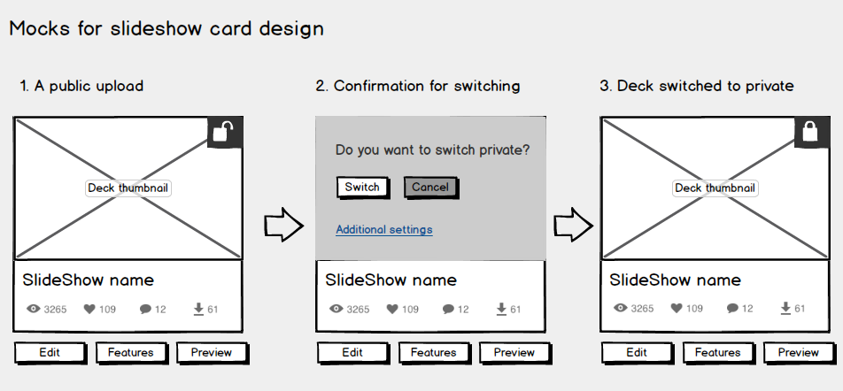
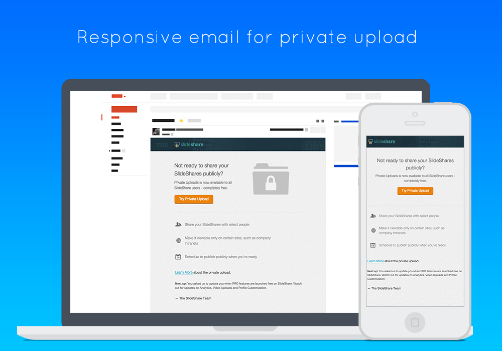

Private upload was a premium fature, it allows users to uploads a deck and keep it private it either to himself of share it secretly with other users. Before rolling out private uploads to all users we planned to improve the overall experience of the flows.
My role was to quickly iterate on the existing product and suggest UI improvements in the existing flows. Also I needed to work on informing users about the private uploads notifictaions (errors, limit reached and other).
SlideShare
Usability, User Experience, Interaction Design
Oct 2014
www.slideshare.com
Improve user experience of the existing private uploads flow. Ensure users can easily switch private at any time. Highlight the use of advanced privacy features
With the correction of usability flaws and modified voice and tone, the errors were reduced. Also we tested the modified flow among the users; it would be implemented in the new profile design.
We made the changes in phased manner, the usability flaws were corrected before the release. The planned improvements in the UI would be carried when we release profile related changes.
We increased the number of private uploads from around 40 odd to around 600. On a daily basis we got request from users to increase their limit.
Private uploads was a popular premium feature used mainly by content creators . Users can switch a presentation private during uploading (upload flow), or author can switch it either from my upload section or slideview page (author only). Although the usage was low in a medium like Slideshare but it was used by enterprises to share confidential stuff. Also you can upload a deck privately for some time and switch it public automatically at a later date. Also it could be embeded in selected sites such as intranets etc.
Initially I evaluated the various user flows to find usability flows in the existing flows. Also checked various other similar services such as youtube, dropbox and other to find similar solutions and design patterns.
I worked on paper mocks to correct correct the usability flaws in the existing design; tested a couple of low-fidelty mocks internally with some users. Before moving to a visual design, I mocked up the flow in Balsamiq to present the entire flow to the design team. For most of the design element we already had a design pattern which was extended to the upload page and advanced setting page.
But the notification pattern (on card notification) was not used I had to design the visual elements and layout of the card. We corrected the basic usability issues and bugs for the MVP, but as we planned to move the My Uploads section to User profile, that section of design would be implemented in profile redesign (ongoing task).
We did have a quiet release as this was a utlity feature for content creators only. But informed interested users about the release by mail. Also added proper notifications in various user flows to highlight the feature to the users. Also assisted the marketing team to create a deck which had little onboarding details; we added the link to deck in blog and mail.
